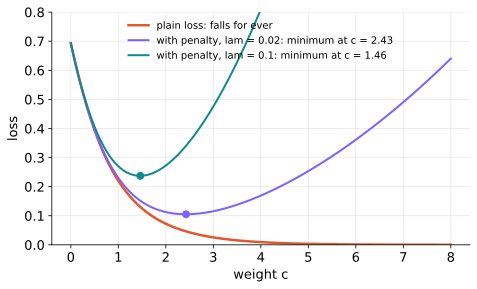

Week 7: Log-sum-exp, softmax cross-entropy and regularisation as a penalty
Gradient descent on a two-weight loss stops moving at a point where the gradient is zero. The Hessian there has eigenvalues 6 and −1. What should the report say?
| Surface | Convex | Trace ended |
|---|---|---|
| bowl | yes | global minimum |
| narrow, step 0.085 | yes | diverged |
| valley | no | global minimum |
| saddle, from (1, 0) | no | stuck at the saddle |
| bumpy | no | a local minimum |
| plateau | no | did not move |
Loss after 60 steps: 0.0096 at 0.05, 0.60 at 0.079, 242 at 0.081.
From (1, 0) descent stopped at (0, 0); from (1, 0.001) it reached (0, 1.414).
A 64-bit float stops at about 1.8 × 10³⁰⁸, so exp(z) is inf for z above about 709.8. A model's logits can reach that.
softmax(z) = softmax(z − m) for any number m. Take m = max z: the largest exponent is then exp(0) = 1.
| Logits (3, 1, −1) | value |
|---|---|
| exp of the shifted (0, −2, −4) | 1, 0.135, 0.018 |
| softmax | 0.867, 0.117, 0.016 |
| log-sum-exp = 3 + log(1 + e⁻² + e⁻⁴) | 3.143 |
CE(z, y) = logsumexp(z) − z_y
No probability is formed, so no probability can round to 0.
−log(softmax(z)_y)
If the probability of the label rounds to 0, the loss is inf and every gradient after it is nan.
A model gives the logits (900, 905) for a learner with label 0. Which way of computing the cross-entropy returns a finite, correct number in 64-bit floats?
The Jacobian of softmax is ∂pᵢ/∂zⱼ = pᵢ (δᵢⱼ − pⱼ): diag(p) − p pᵀ.
Differentiate logsumexp(z) − z_y directly: the first term gives p, the second gives the one-hot vector e_y.
∂CE / ∂z = p − e_y
| Logits (2, 0, 1), label 2 | value |
|---|---|
| p | 0.665, 0.090, 0.245 |
| e_y | 0, 0, 1 |
| gradient p − e_y | 0.665, 0.090, −0.755 |
For one learner the model's probabilities are (0.1, 0.7, 0.2) and the true level is 0. What is the gradient of the cross-entropy with respect to the three logits?

Any c > 0 classifies all four points; a larger c is more confident, and the loss is lower. No finite c is best.
L(w) + (λ/2) ‖w‖²
Minimum at c = 2.43 for λ = 0.02, and at c = 1.46 for λ = 0.1.
H + λI: every eigenvalue rises by λ. A convex loss becomes strictly convex, with one minimiser.
∇L + λw: each step also shrinks the weights by the factor 1 − ηλ, which is why it is called weight decay.
The minimiser is no longer the plain loss's best point: the training loss rises. Whether held-out loss falls is a measurement, not a promise.
At its minimum, a plain loss in two weights has Hessian eigenvalues 0 and 4. The analyst adds the penalty (0.5/2)‖w‖². What are the new eigenvalues, and what changes?
A stable three-level placement model, trained with and without an L2 penalty
W7_1_stable_softmax.ipynblabs/problem_sets/PS7.py.cd labs
uv run python problem_sets/check.py PS7Log-sum-exp with the row's maximum; cross-entropy from logits.
The gradient of softmax cross-entropy with respect to the logits.
It bounds the weights and makes the minimum unique; its effect on held-out loss is measured.
Hand in Problem set 7. Week 8 replaces a soft penalty with a hard limit: a fixed budget, and the price of each extra thousand.